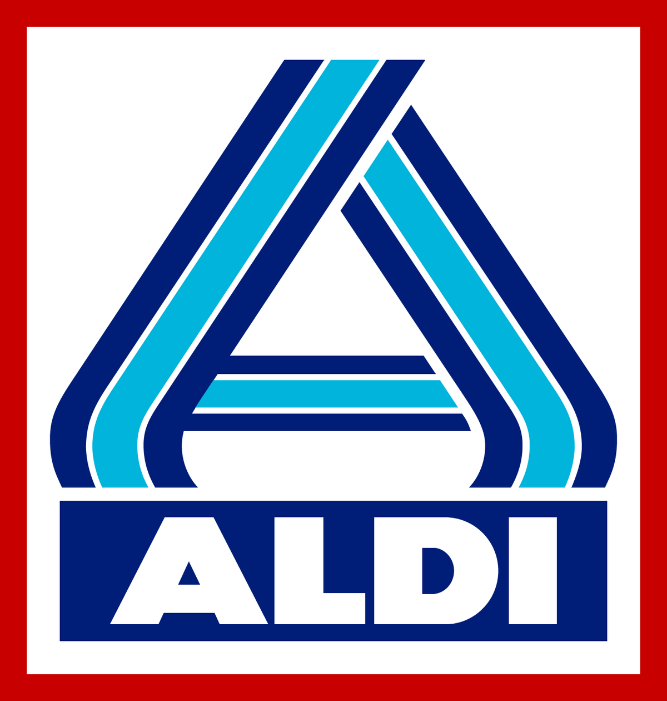
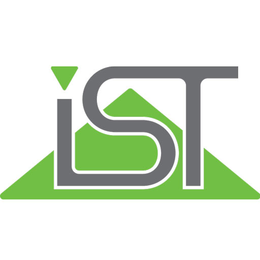
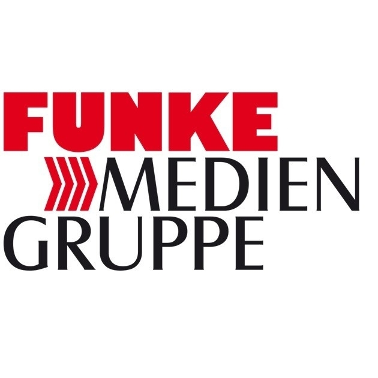
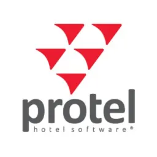
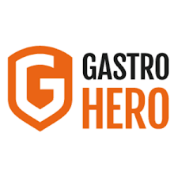

IT-Teamlead

ALDI Nord
2021 - now
Essen
Mein aktueller Job. Das aktuell beste Team bei ALDI-Nord, was zu 90 % den Mitarbeitern und 10 % dem Zufall zuzuordnen ist. Ich habe die große Ehre, dieses Team zu leiten und auf neue Aufgaben vorzubereiten.
-
Teamleitung (Organisation & Führung)
Das Team betreibt und managt unter anderem folgende Applikationen:
SAP ARIBA, SAP S/4 MDM, Kontraktverwaltung, Informatica P360, Starlims
-
Disziplinarische Führung von 8 Mitarbeitern
-
FTE-Planung
-
Durchführung von Vorstellungsgesprächen
-
Incident- und Service Request Management
-
ITIL-Problemmanagement
-
Kommunikation mit IT- und Fachbereichen
-
Arbeit / Unterstützung in Initiativen und Projekten
-
Optimierung des Prozesses zum Versand von unternehmensweiten Stör- und Versandmeldungen
-
Vertragsverhandlungen mit Dienstleistungen
-
Monitoring von Kundenzufriedenheit
-
Budgetplanung
IT-Consultant / Junior-IT-Consultant
ALDI Nord
2020 - 2021 / 2019 - 2020
Essen
Im damals besten Team von ALDI-Nord durfte ich im 2nd Level die HR-Systeme supporten. Bei Projektentwicklungen unterstützen und extrem viel Erfahrungen sammeln. Da ich den Job wohl nicht ganz verkehrt ausgeführt habe, durfte ich dann das nächste beste Team bei ALDI-Nord als Teamleiter leiten und weiter aufbauen.
-
2nd Level Support für internationale HR LOGA (Lohn) und GFOS (Zeiterfassung)
-
Incident & Problemmanagement
-
Störungsanalyse
-
Dokumentation von Analysen & Lösungen
-
Aufbau & Pflege der Knowledgedatabase
Autor von Studienskripten (Nebentätigkeit)

IST Studieninstitut
2015 - 2021
Düsseldorf
Ich hatte die Möglichkeit für das IST-Institut Studienskripte für die Erwachsenenbildung im Bereich IT zu verfassen.
-
Erstellung und Pflege von EDV Skripten für die Erwachsenenbildung
-
Entwicklung und Ausarbeitung von Lerninhalten zu den Themen Einführung in die allgemeine EDV, MS-Office, Netzwerk & Datensicherheit
-
Beteiligung an der Weiterentwicklung von Studienmodulen und aktive Unterstützung über den gesamten Prozess
-
Technische Anpassung, Aktualisierung und Pflege von Lerninhalten
-
Analyse und Auswertung von Studierendenfeedback
Knowledge Base Manager
ServiceDesk

Funke Mediengruppe
2017 - 2019
Essen
Bei der Funke durfte ich meine ersten Projekte planen und durchführen. On & Offboarding Prozess für die HR mit direkter Schnittstelle zum eingesetzten Ticketsystem. Aufbau einer unternehmensweit genutzten Knowledge-Base. Zudem durfte ich einem hervorragenden Team im Servicedesk helfen, die tägliche Ticketflut zu bearbeiten. Es hat enorm viel Spaß gemacht.
-
Aufbau, Planung und Umsetzung einer unternehmensweiten IT Knowledge-Base
-
Projektverantwortung für die Implementierung des On- & Offboarding Prozesses im ITSM Tool
-
Administrative Rolle im ITSM Tool (TOPdesk)
-
Administrative Aufgaben im Service Desk
Software Consultant

protel hotelsoftware GmbH
2016 - 2017
Dortmund
Direkt nach dem Studium durfte ich bei protel mein Können unter Beweis stellen. Deutschlandweit in Hotels die Server & Hotelsoftware updaten, die Mitarbeiter schulen. Und aus dem Büro heraus Support für die Hotelsoftware leisten.
-
Installation und Konfiguration von Hard- und Software bei Kunden vor Ort & per Fernwartung
-
Bearbeiten von Anfragen, Problemstellungen und Störungsmeldungen aus allen IT-Bereichen (Software, Hardware, Netzwerk, Peripherie)
-
Planung und Durchführung von Anwenderschulungen
-
Wartung & Wiederherstellung von SQL Datenbanken
Content-Management-Spezialist (Studentenjob)

Gastro-Hero
2014 - 2015
Dortmund
Neben meinem Studium konnte ich hier erste Büroluft schnuppern und meine ersten Erfahrungen in einer IT-Abteilung sammeln.
Gastro-Hero war damals ein sehr junges und dynamisches Unternehmen, die Geschäftsführer & Mitarbeiter sehr offen und hilfsbereit. Es hat mir sehr viel Freude bereitet, hier neben dem Studium zu jobben.
-
Konzeption von Internetauftritten
-
inhaltliche Planung
-
Themenkonzeption
-
Recherche
Brenner & Kranführer
Salzgitter Mannesmann AG
2012 - 2014
Mülheim
Erster Schritt aus der Gastronomie heraus. Ein harter Cut, ganz andere Tätigkeit, ganz anderes Umfeld.
Tat mir mega gut. Ich musste nach der Gastro Zeit erst einmal etwas Abstand gewinnen und die Tätigkeit bei Mannesmann war genau das, sehr weit weg von der Gastronomie.
-
Fahren und bedienen von Kranfahrzeugen
-
Ausloten und Einweisung unter Einhaltung der Sicherheitsbestimmungen
-
Kommunikation zu internen Auftraggebern und externen operativen Dienstleitungspartnern
-
Sicherstellung der Betriebsbereitschaft durch Störungsmeldung und ggf. Unterstützung bei Wartung und Fehlerbehebung
Gastronom
Werners
2003 - 2011
Mülheim
The Roots - Time also known as: Die Selbständigkeit, selbst & ständig.
-
Führung von 10 - 20 Mitarbeitern
-
Führung von 3 Restaurants und Partyservice
-
Partyservice bis 2000 Personen
-
Wenn ihr das hier lest seit, habt ihr lange durchgehalten. Warum erwähne ich meine Gastronomie Zeit überhaupt?
Dieser Abschnitt meines Lebens ist schon sehr lange her und auf den ersten Blick hat dies nicht viel mit einem Developer Job zu tun.
Jedoch hat mir die Gastronomie sehr viel beigebracht. Man überlebt nicht 8 Jahre in dieser Branche, wenn man nicht auf Kundenwünsche eingeht, wenn man nicht ständig die Extrameile geht und wenn man nicht mit Menschen umgehen kann. Diese Skills begleiten mich durch meine gesamte Karriere und ermöglichten es mir in jedem meiner bisherigen Berufe über den Tellerrand zu sehen und über das Geforderte hinaus zu gehen.